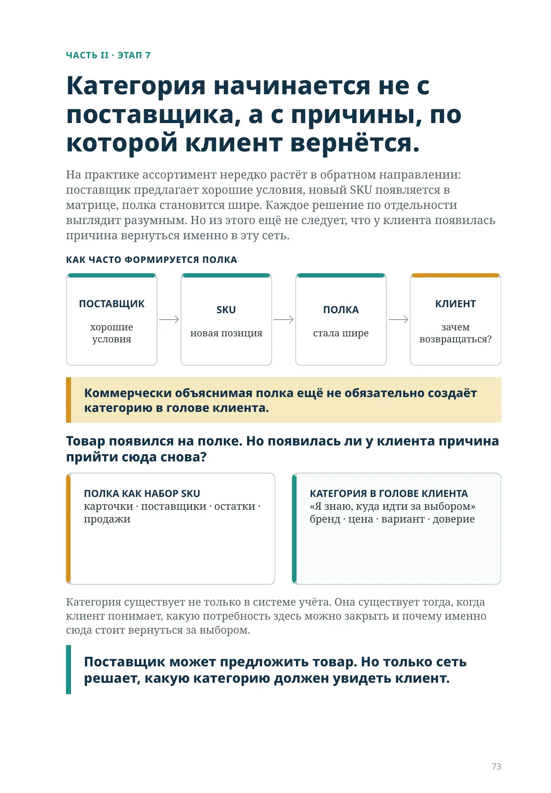
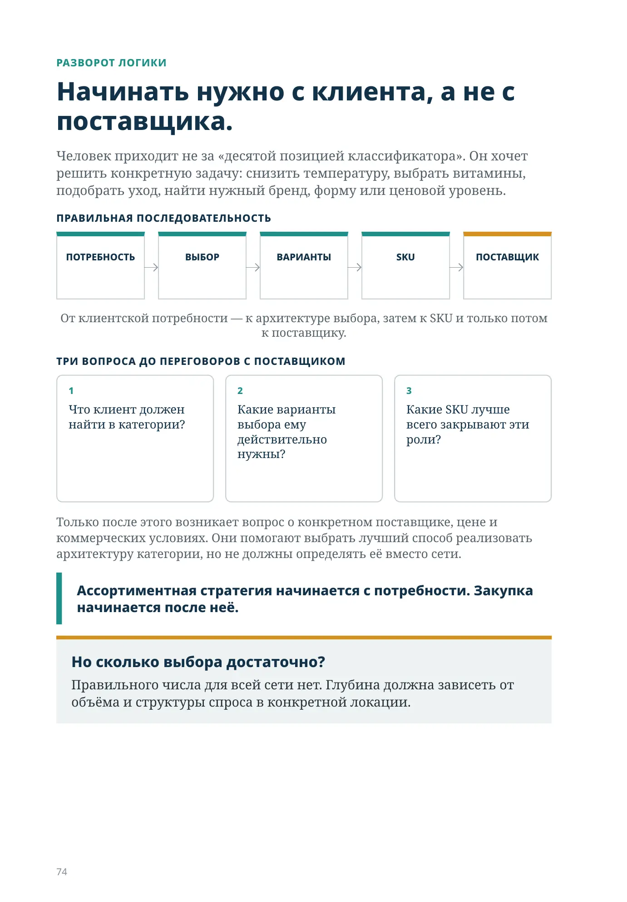
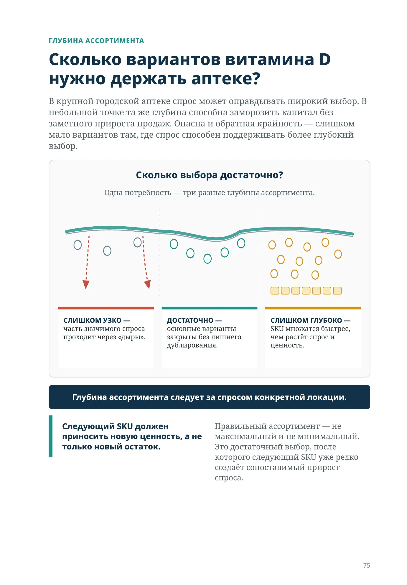
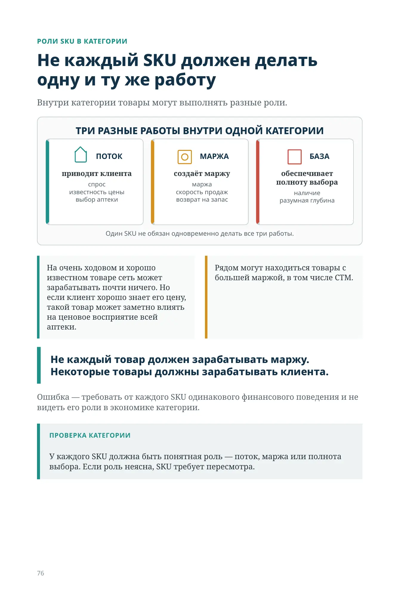
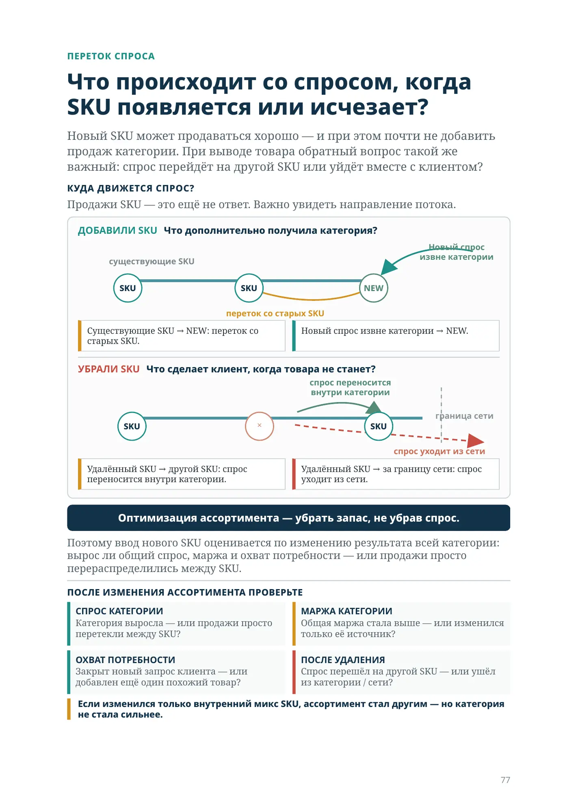
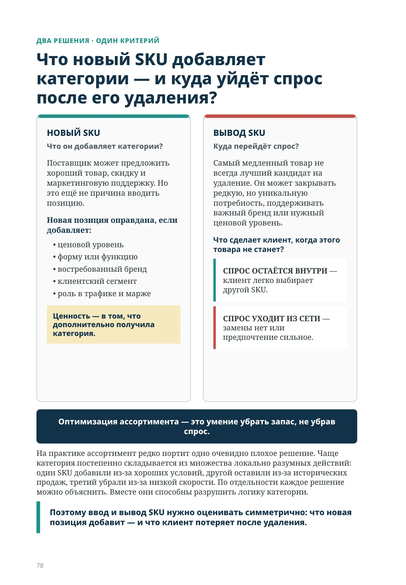
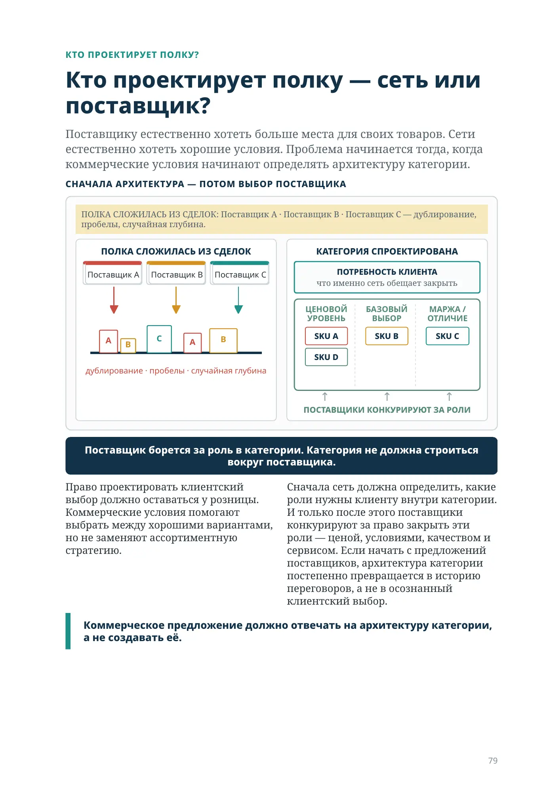
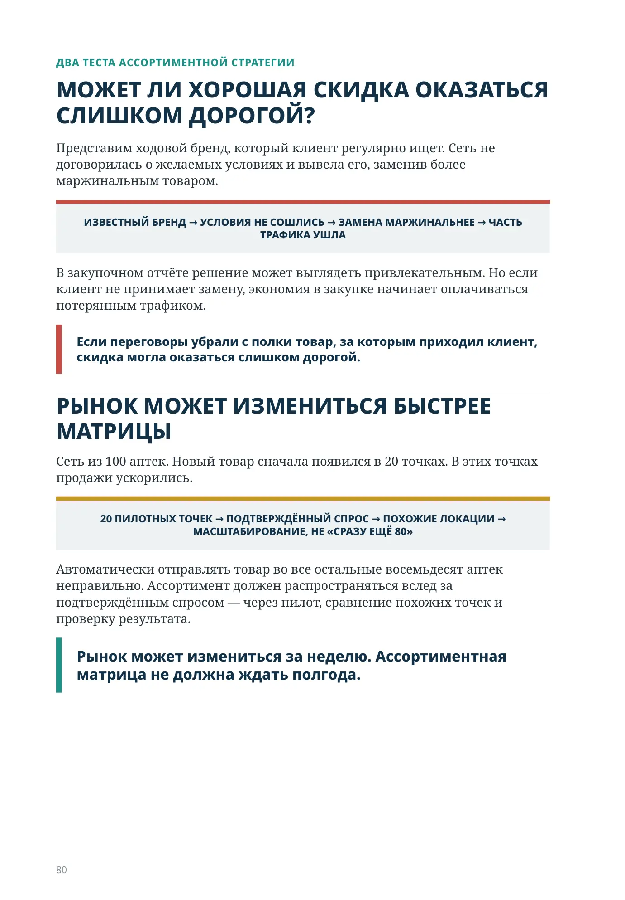
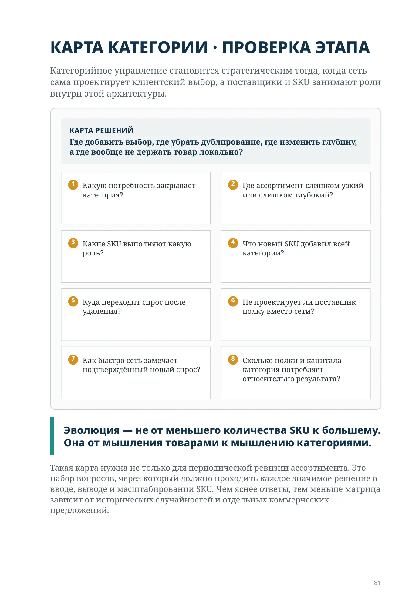
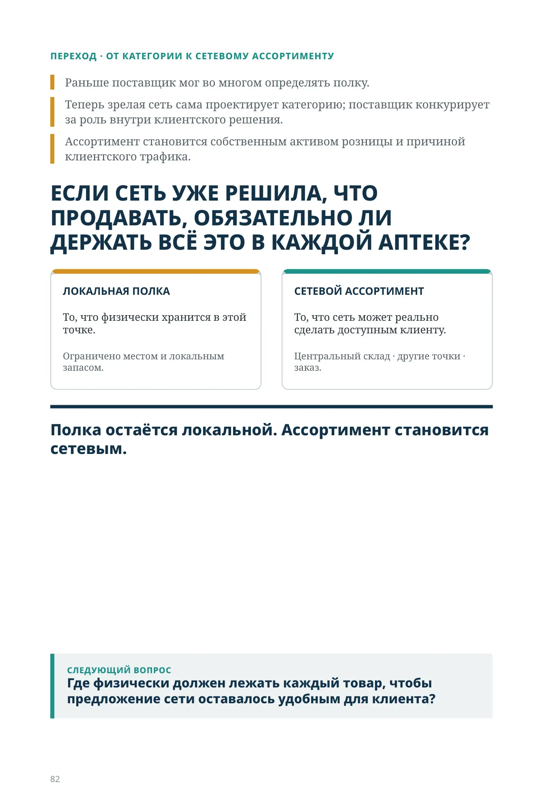

У вас есть несколько товаров — или у вас есть категория?
ЧАСТЬ II · ЭТАП 7
Категория начинается не с поставщика, а с причины, по которой клиент вернётся.
На практике ассортимент нередко растёт в обратном направлении: поставщик предлагает хорошие условия, новый SKU появляется в матрице, полка становится шире. Каждое решение по отдельности выглядит разумным. Но из этого ещё не следует, что у клиента появилась причина вернуться именно в эту сеть.
КАК ЧАСТО ФОРМИРУЕТСЯ ПОЛКА
ПОСТАВЩИК
хорошие условия
SKU
новая позиция
ПОЛКА
стала шире
КЛИЕНТ
зачем возвращаться?
Коммерчески объяснимая полка ещё не обязательно создаёт категорию в голове клиента.
Товар появился на полке. Но появилась ли у клиента причина прийти сюда снова?
ПОЛКА КАК НАБОР SKU
карточки · поставщики · остатки · продажи
КАТЕГОРИЯ В ГОЛОВЕ КЛИЕНТА
«Я знаю, куда идти за выбором»
бренд · цена · вариант · доверие
Категория существует не только в системе учёта. Она существует тогда, когда клиент понимает, какую потребность здесь можно закрыть и почему именно сюда стоит вернуться за выбором.
Поставщик может предложить товар. Но только сеть решает, какую категорию должен увидеть клиент.
РАЗВОРОТ ЛОГИКИ
Начинать нужно с клиента, а не с поставщика.
Человек приходит не за «десятой позицией классификатора». Он хочет решить конкретную задачу: снизить температуру, выбрать витамины, подобрать уход, найти нужный бренд, форму или ценовой уровень.
ПРАВИЛЬНАЯ ПОСЛЕДОВАТЕЛЬНОСТЬ
- ПОТРЕБНОСТЬ
- ВЫБОР
- ВАРИАНТЫ
- SKU
- ПОСТАВЩИК
От клиентской потребности — к архитектуре выбора, затем к SKU и только потом к поставщику.
ТРИ ВОПРОСА ДО ПЕРЕГОВОРОВ С ПОСТАВЩИКОМ
- Что клиент должен найти в категории?
- Какие варианты выбора ему действительно нужны?
- Какие SKU лучше всего закрывают эти роли?
Только после этого возникает вопрос о конкретном поставщике, цене и коммерческих условиях. Они помогают выбрать лучший способ реализовать архитектуру категории, но не должны определять её вместо сети.
Ассортиментная стратегия начинается с потребности. Закупка начинается после неё.
ГЛУБИНА АССОРТИМЕНТА
Сколько вариантов витамина D нужно держать аптеке?
В крупной городской аптеке спрос может оправдывать широкий выбор. В небольшой точке та же глубина способна заморозить капитал без заметного прироста продаж. Опасна и обратная крайность — слишком мало вариантов там, где спрос способен поддерживать более глубокий выбор.
Сколько выбора достаточно?
Одна потребность — три разные глубины ассортимента.
СЛИШКОМ УЗКО — часть значимого спроса проходит через «дыры».
ДОСТАТОЧНО — основные варианты закрыты без лишнего дублирования.
СЛИШКОМ ГЛУБОКО — SKU множатся быстрее, чем растёт спрос и ценность.
Глубина ассортимента следует за спросом конкретной локации.
Следующий SKU должен приносить новую ценность, а не только новый остаток.
Правильный ассортимент — не максимальный и не минимальный. Это достаточный выбор, после которого следующий SKU уже редко создаёт сопоставимый прирост спроса.
РОЛИ SKU В КАТЕГОРИИ
Не каждый SKU должен делать одну и ту же работу
Внутри категории товары могут выполнять разные роли.
ПОТОК
приводит клиента
спрос
известность цены
выбор аптеки
МАРЖА
создаёт маржу
маржа
скорость продаж
возврат на запас
БАЗА
обеспечивает полноту выбора
наличие
разумная глубина
Один SKU не обязан одновременно делать все три работы.
На очень ходовом и хорошо известном товаре сеть может зарабатывать почти ничего. Но если клиент хорошо знает его цену, такой товар может заметно влиять на ценовое восприятие всей аптеки.
Рядом могут находиться товары с большей маржой, в том числе СТМ.
Не каждый товар должен зарабатывать маржу. Некоторые товары должны зарабатывать клиента.
Ошибка — требовать от каждого SKU одинакового финансового поведения и не видеть его роли в экономике категории.
ПРОВЕРКА КАТЕГОРИИ
У каждого SKU должна быть понятная роль — поток, маржа или полнота выбора. Если роль неясна, SKU требует пересмотра.
ПЕРЕТОК СПРОСА
Что происходит со спросом, когда SKU появляется или исчезает?
Новый SKU может продаваться хорошо — и при этом почти не добавить продаж категории. При выводе товара обратный вопрос такой же важный: спрос перейдёт на другой SKU или уйдёт вместе с клиентом?
Куда движется спрос?
Продажи SKU — это ещё не ответ. Важно увидеть направление потока.
ДОБАВИЛИ SKU Что дополнительно получила категория?
Существующие SKU → NEW: переток со старых SKU.
Новый спрос извне категории → NEW.
УБРАЛИ SKU Что сделает клиент, когда товара не станет?
Удалённый SKU → другой SKU: спрос переносится внутри категории.
Удалённый SKU → за границу сети: спрос уходит из сети.
Оптимизация ассортимента — убрать запас, не убрав спрос.
Поэтому ввод нового SKU оценивается по изменению результата всей категории: вырос ли общий спрос, маржа и охват потребности — или продажи просто перераспределились между SKU.
ПОСЛЕ ИЗМЕНЕНИЯ АССОРТИМЕНТА ПРОВЕРЬТЕ
СПРОС КАТЕГОРИИКатегория выросла — или продажи просто перетекли между SKU?
МАРЖА КАТЕГОРИИОбщая маржа стала выше — или изменился только её источник?
ОХВАТ ПОТРЕБНОСТИЗакрыт новый запрос клиента — или добавлен ещё один похожий товар?
ПОСЛЕ УДАЛЕНИЯСпрос перешёл на другой SKU — или ушёл из категории / сети?
Если изменился только внутренний микс SKU, ассортимент стал другим — но категория не стала сильнее.
ДВА РЕШЕНИЯ · ОДИН КРИТЕРИЙ
Что новый SKU добавляет категории — и куда уйдёт спрос после его удаления?
НОВЫЙ SKU
Что он добавляет категории?
Поставщик может предложить хороший товар, скидку и маркетинговую поддержку. Но это ещё не причина вводить позицию.
Новая позиция оправдана, если добавляет:
- ценовой уровень
- форму или функцию
- востребованный бренд
- клиентский сегмент
- роль в трафике и марже
Ценность — в том, что дополнительно получила категория.
ВЫВОД SKU
Куда перейдёт спрос?
Самый медленный товар не всегда лучший кандидат на удаление. Он может закрывать редкую, но уникальную потребность, поддерживать важный бренд или нужный ценовой уровень.
Что сделает клиент, когда этого товара не станет?
СПРОС ОСТАЁТСЯ ВНУТРИ — клиент легко выбирает другой SKU.
СПРОС УХОДИТ ИЗ СЕТИ — замены нет или предпочтение сильное.
Оптимизация ассортимента — это умение убрать запас, не убрав спрос.
На практике ассортимент редко портит одно очевидно плохое решение. Чаще категория постепенно складывается из множества локально разумных действий: один SKU добавили из-за хороших условий, другой оставили из-за исторических продаж, третий убрали из-за низкой скорости. По отдельности каждое решение можно объяснить. Вместе они способны разрушить логику категории.
Поэтому ввод и вывод SKU нужно оценивать симметрично: что новая позиция добавит — и что клиент потеряет после удаления.
КТО ПРОЕКТИРУЕТ ПОЛКУ?
Кто проектирует полку — сеть или поставщик?
Поставщику естественно хотеть больше места для своих товаров. Сети естественно хотеть хорошие условия. Проблема начинается тогда, когда коммерческие условия начинают определять архитектуру категории.
СНАЧАЛА АРХИТЕКТУРА — ПОТОМ ВЫБОР ПОСТАВЩИКА
ПОЛКА СЛОЖИЛАСЬ ИЗ СДЕЛОК: Поставщик A · Поставщик B · Поставщик C — дублирование, пробелы, случайная глубина.
ПОЛКА СЛОЖИЛАСЬ ИЗ СДЕЛОК
дублирование · пробелы · случайная глубина
КАТЕГОРИЯ СПРОЕКТИРОВАНА
ПОТРЕБНОСТЬ КЛИЕНТАчто именно сеть обещает закрыть
УРОВЕНЬSKU ASKU D
ВЫБОРSKU B
ОТЛИЧИЕSKU C
ПОСТАВЩИКИ КОНКУРИРУЮТ ЗА РОЛИ
Поставщик борется за роль в категории. Категория не должна строиться вокруг поставщика.
Право проектировать клиентский выбор должно оставаться у розницы. Коммерческие условия помогают выбрать между хорошими вариантами, но не заменяют ассортиментную стратегию.
Сначала сеть должна определить, какие роли нужны клиенту внутри категории. И только после этого поставщики конкурируют за право закрыть эти роли — ценой, условиями, качеством и сервисом. Если начать с предложений поставщиков, архитектура категории постепенно превращается в историю переговоров, а не в осознанный клиентский выбор.
Коммерческое предложение должно отвечать на архитектуру категории, а не создавать её.
ДВА ТЕСТА АССОРТИМЕНТНОЙ СТРАТЕГИИ
МОЖЕТ ЛИ ХОРОШАЯ СКИДКА ОКАЗАТЬСЯ СЛИШКОМ ДОРОГОЙ?
Представим ходовой бренд, который клиент регулярно ищет. Сеть не договорилась о желаемых условиях и вывела его, заменив более маржинальным товаром.
ИЗВЕСТНЫЙ БРЕНД → УСЛОВИЯ НЕ СОШЛИСЬ → ЗАМЕНА МАРЖИНАЛЬНЕЕ → ЧАСТЬ ТРАФИКА УШЛА
В закупочном отчёте решение может выглядеть привлекательным. Но если клиент не принимает замену, экономия в закупке начинает оплачиваться потерянным трафиком.
Если переговоры убрали с полки товар, за которым приходил клиент, скидка могла оказаться слишком дорогой.
РЫНОК МОЖЕТ ИЗМЕНИТЬСЯ БЫСТРЕЕ МАТРИЦЫ
Сеть из 100 аптек. Новый товар сначала появился в 20 точках. В этих точках продажи ускорились.
20 ПИЛОТНЫХ ТОЧЕК → ПОДТВЕРЖДЁННЫЙ СПРОС → ПОХОЖИЕ ЛОКАЦИИ → МАСШТАБИРОВАНИЕ, НЕ «СРАЗУ ЕЩЁ 80»
Автоматически отправлять товар во все остальные восемьдесят аптек неправильно. Ассортимент должен распространяться вслед за подтверждённым спросом — через пилот, сравнение похожих точек и проверку результата.
Рынок может измениться за неделю. Ассортиментная матрица не должна ждать полгода.
КАРТА КАТЕГОРИИ · ПРОВЕРКА ЭТАПА
Категорийное управление становится стратегическим тогда, когда сеть сама проектирует клиентский выбор, а поставщики и SKU занимают роли внутри этой архитектуры.
КАРТА РЕШЕНИЙ
Где добавить выбор, где убрать дублирование, где изменить глубину, а где вообще не держать товар локально?
- Какую потребность закрывает категория?
- Где ассортимент слишком узкий или слишком глубокий?
- Какие SKU выполняют какую роль?
- Что новый SKU добавил всей категории?
- Куда переходит спрос после удаления?
- Не проектирует ли поставщик полку вместо сети?
- Как быстро сеть замечает подтверждённый новый спрос?
- Сколько полки и капитала категория потребляет относительно результата?
Эволюция — не от меньшего количества SKU к большему. Она от мышления товарами к мышлению категориями.
Такая карта нужна не только для периодической ревизии ассортимента. Это набор вопросов, через который должно проходить каждое значимое решение о вводе, выводе и масштабировании SKU. Чем яснее ответы, тем меньше матрица зависит от исторических случайностей и отдельных коммерческих предложений.
ПЕРЕХОД · ОТ КАТЕГОРИИ К СЕТЕВОМУ АССОРТИМЕНТУ
Раньше поставщик мог во многом определять полку.
Теперь зрелая сеть сама проектирует категорию; поставщик конкурирует за роль внутри клиентского решения.
Ассортимент становится собственным активом розницы и причиной клиентского трафика.
ЕСЛИ СЕТЬ УЖЕ РЕШИЛА, ЧТО ПРОДАВАТЬ, ОБЯЗАТЕЛЬНО ЛИ ДЕРЖАТЬ ВСЁ ЭТО В КАЖДОЙ АПТЕКЕ?
ЛОКАЛЬНАЯ ПОЛКА
То, что физически хранится в этой точке.
Ограничено местом и локальным запасом.
СЕТЕВОЙ АССОРТИМЕНТ
То, что сеть может реально сделать доступным клиенту.
Центральный склад · другие точки · заказ.